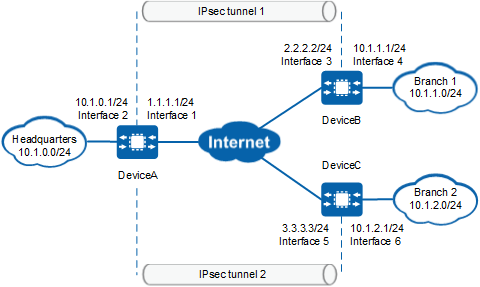

Example for Establishing an IPsec Tunnel Using an IPsec Policy Template (Branches Use Different PSKs for Authentication)
Networking Requirements
In Figure 1, the headquarters and two branches (branch1 and branch 2) connect to the Internet through DeviceA, DeviceB, and DeviceC respectively. There are reachable routes between DeviceA and DeviceB, and between DeviceA and DeviceC. An IPsec tunnel is established between DeviceA and DeviceB and between DeviceA and DeviceC through public network interfaces. Different pre-shared keys (PSKs) are used for identity authentication to ensure secure transmission of data flows on specific network segments between the headquarters and two branches.

In this example, interface 1 and interface 2 represent 10GE 0/0/1 and 10GE 0/0/2 on DeviceA, interface 3 and interface 4 represent 10GE 0/0/1 and 10GE 0/0/2 on DeviceB, and interface 5 and interface 6 represent 10GE 0/0/1 and 10GE 0/0/2 on DeviceC.

Item |
Data |
|---|---|
DeviceA |
Interface: 10GE 0/0/1 IP address: 1.1.1.1/24 |
Interface: 10GE 0/0/2 IP address: 10.1.0.1/24 |
|
IPsec configuration Authentication mode: PSK authentication PSKs: YsHsjx_202206, Admin@456 |
|
DeviceB |
Interface: 10GE 0/0/1 IP address: 2.2.2.2/24 |
Interface: 10GE 0/0/2 IP address: 10.1.1.1/24 |
|
IPsec configuration Remote IP address: 1.1.1.1 Authentication mode: PSK authentication PSK: YsHsjx_202206 Local ID type: IP address Remote ID type: any |
|
DeviceC |
Interface: 10GE 0/0/1 IP address: 3.3.3.3/24 |
Interface: 10GE 0/0/2 IP address: 10.1.2.1/24 |
|
IPsec configuration Remote IP address: 1.1.1.1 Authentication mode: PSK authentication PSK: Admin@456 Local ID type: IP address Remote ID type: any |
Configuration Roadmap
The tunnel negotiation parameter settings on DeviceA, DeviceB, and DeviceC must be the same.
This example uses default security algorithms of IPsec.
For security purposes, you are advised not to use the weak security algorithm or weak security protocol of this feature. If you must use such a weak security algorithm or protocol, run the install feature-software WEAKEA command to install the weak security algorithm or protocol feature package WEAKEA.
- Configure interfaces.
- Configure static routes to divert tunnel negotiation packets and encrypted data packets transmitted through the IPsec tunnel.
- Configure IPsec policies and apply an IPsec policy group to an interface. Template IPsec policies need to be configured on DeviceA at the headquarters, and ISAKMP IPsec policies need to be configured on DeviceB and DeviceC in the branches. The branches use different PSKs to access the headquarters. Therefore, you need to configure an IKE user table on DeviceA and configure different PSKs for different branches to initiate tunnel negotiation.
Procedure
- Configure public and private network interfaces on DeviceA.
# Configure the public network interface 10GE 0/0/1.
<HUAWEI> system-view [HUAWEI] sysname DeviceA [DeviceA] interface 10ge 0/0/1 [DeviceA-10GE0/0/1] undo portswitch [DeviceA-10GE0/0/1] ip address 1.1.1.1 24 [DeviceA-10GE0/0/1] quit
# Configure the private network interface 10GE 0/0/2.
[DeviceA] interface 10ge 0/0/2 [DeviceA-10GE0/0/2] undo portswitch [DeviceA-10GE0/0/2] ip address 10.1.0.1 24 [DeviceA-10GE0/0/2] quit
- Configure a default static route on DeviceA to divert tunnel negotiation packets and encrypted data packets transmitted through the IPsec tunnel.
Assume that the next-hop IP address of the route from DeviceA to the Internet is 1.1.1.254.
[DeviceA] ip route-static 0.0.0.0 0.0.0.0 1.1.1.254
- Configure template IPsec policies on DeviceA and apply an IPsec policy group to 10GE 0/0/1.
- Configure an IKE user table and configure different PSKs for different branches.
When the IKEv1 main mode and PSK authentication are used, id-type can only be set to an IP address, and in NAT traversal scenarios, the IP address must be set to a post-NAT address. If the branches dynamically obtain IP addresses, you must use the IKEv1 or IKEv2 aggressive mode and are advised to set id-type to an FQDN.
[DeviceA] ike user-table 10 [DeviceA-ike-user-table-10] user deviceb [DeviceA-ike-user-table-10-deviceb] id-type ip 2.2.2.2 [DeviceA-ike-user-table-10-deviceb] pre-shared-key YsHsjx_202206 [DeviceA-ike-user-table-10-deviceb] quit [DeviceA-ike-user-table-10] user devicec [DeviceA-ike-user-table-10-devicec] id-type ip 3.3.3.3 [DeviceA-ike-user-table-10-devicec] pre-shared-key Admin@456 [DeviceA-ike-user-table-10-devicec] quit
- Configure an IKE user table and configure different PSKs for different branches.
- Configure public and private network interfaces on DeviceB.
# Configure the public network interface 10GE 0/0/1.
<HUAWEI> system-view [HUAWEI] sysname DeviceB [DeviceB] interface 10ge 0/0/1 [DeviceB-10GE0/0/1] undo portswitch [DeviceB-10GE0/0/1] ip address 2.2.2.2 24 [DeviceB-10GE0/0/1] quit
# Configure the private network interface 10GE 0/0/2.
[DeviceB] interface 10ge 0/0/2 [DeviceB-10GE0/0/2] undo portswitch [DeviceB-10GE0/0/2] ip address 10.1.1.1 24 [DeviceB-10GE0/0/2] quit
- Configure a default static route on DeviceB to divert tunnel negotiation packets and encrypted data packets transmitted through the IPsec tunnel.
Assume that the next-hop IP address of the route from DeviceB to the Internet is 2.2.2.254.
[DeviceB] ip route-static 0.0.0.0 0.0.0.0 2.2.2.254
- Configure ISAKMP IPsec policies on DeviceB and apply an IPsec policy group to 10GE 0/0/1.
- Configure an IPsec policy.
[DeviceB] ipsec policy map1 10 isakmp [DeviceB-ipsec-policy-isakmp-map1-10] security acl 3000 [DeviceB-ipsec-policy-isakmp-map1-10] proposal tran1 [DeviceB-ipsec-policy-isakmp-map1-10] ike-peer a [DeviceB-ipsec-policy-isakmp-map1-10] sa trigger-mode auto [DeviceB-ipsec-policy-isakmp-map1-10] quit
By default, the negotiation for IPsec tunnel establishment is triggered by traffic. To enable automatic negotiation for IPsec tunnel establishment, run the sa trigger-mode auto command.
- Configure an IPsec policy.
- Configure public and private network interfaces on DeviceC.
# Configure the public network interface 10GE 0/0/1.
<HUAWEI> system-view [HUAWEI] sysname DeviceC [DeviceC] interface 10ge 0/0/1 [DeviceC-10GE0/0/1] undo portswitch [DeviceC-10GE0/0/1] ip address 3.3.3.3 24 [DeviceC-10GE0/0/1] quit
# Configure the private network interface 10GE 0/0/2.
[DeviceC] interface 10ge 0/0/2 [DeviceC-10GE0/0/2] undo portswitch [DeviceC-10GE0/0/2] ip address 10.1.2.1 24 [DeviceC-10GE0/0/2] quit
- Configure a default static route on DeviceC to divert tunnel negotiation packets and encrypted data packets transmitted through the IPsec tunnel.
Assume that the next-hop IP address of the route from DeviceC to the Internet is 3.3.3.254.
[DeviceC] ip route-static 0.0.0.0 0.0.0.0 3.3.3.254
- Configure ISAKMP IPsec policies on DeviceC and apply an IPsec policy group to 10GE 0/0/1.
- Configure an IPsec policy.
[DeviceC] ipsec policy map1 10 isakmp [DeviceC-ipsec-policy-isakmp-map1-10] security acl 3000 [DeviceC-ipsec-policy-isakmp-map1-10] proposal tran1 [DeviceC-ipsec-policy-isakmp-map1-10] ike-peer a [DeviceC-ipsec-policy-isakmp-map1-10] sa trigger-mode auto [DeviceC-ipsec-policy-isakmp-map1-10] quit
By default, the negotiation for IPsec tunnel establishment is triggered by traffic. To enable automatic negotiation for IPsec tunnel establishment, run the sa trigger-mode auto command.
- Configure an IPsec policy.
Verifying the Configuration
After the preceding configuration is complete, run the ping command on the devices in the protected network segments of branches 1 and 2 to trigger IKE negotiation.
If IKE negotiation succeeds, devices in the protected network segments at both ends of the tunnel can ping each other successfully. Otherwise, IKE negotiation fails.
- View IKE SAs and IPsec SAs on DeviceA at the headquarters. The following command output indicates that two pairs of IKE SAs and IPsec SAs have been established.
<DeviceA> display ike sa Total number of IKE SA in all CPU : 4 Total number of phase 1 SA in all CPU : 2 Total number of phase 2 SA in all CPU : 2 Flag Description: RD--READY ST--STAYALIVE RL--REPLACED FD--FADING TO--TIMEOUT HRT--HEARTBEAT LKG--LAST KNOWN GOOD SEQ NO. BCK--BACKED UP M--ACTIVE S--STANDBY A--ALONE NEG--NEGOTIATING Slot 0, cpu 0 IKE SA information : Number of IKE SA : 4, number of IKE SA1: 2, number of IKE SA2: 2 ------------------------------------------------------------------------------------ Conn-ID Peer VPN Flag(s) Phase RemoteType RemoteID ------------------------------------------------------------------------------------ 83886142 2.2.2.2/500 RD|A v2:2 IP 2.2.2.2 83886137 2.2.2.2/500 RD|A v2:1 IP 2.2.2.2 134217773 3.3.3.3/500 RD|A v2:2 IP 3.3.3.3 134217765 3.3.3.3/500 RD|A v2:1 IP 3.3.3.3 ------------------------------------------------------------------------------------
<DeviceA> display ipsec sa brief Slot 0, cpu 0 IPSec SA information: Src address Dst address SPI VPN Protocol Algorithm ------------------------------------------------------------------------------- 1.1.1.1 2.2.2.2 16423687 ESP E:AES-256-GCM-128 2.2.2.2 1.1.1.1 274624861 ESP E:AES-256-GCM-128 1.1.1.1 3.3.3.3 7787885 ESP E:AES-256-GCM-128 3.3.3.3 1.1.1.1 15539132 ESP E:AES-256-GCM-128 Number of IPSec SA : 4 ------------------------------------------------------------------------------- Total number of IPSec SA in all CPU : 4 View IKE SAs and IPsec SAs on DeviceB and DeviceC in the branches. The following command output of DeviceB indicates that IKE SAs and IPsec SAs with the peer address and destination address being the IP address of DeviceA have been established on DeviceB.
<DeviceB> display ike sa Total number of IKE SA in all CPU : 2 Total number of phase 1 SA in all CPU : 1 Total number of phase 2 SA in all CPU : 1 Flag Description: RD--READY ST--STAYALIVE RL--REPLACED FD--FADING TO--TIMEOUT HRT--HEARTBEAT LKG--LAST KNOWN GOOD SEQ NO. BCK--BACKED UP M--ACTIVE S--STANDBY A--ALONE NEG--NEGOTIATING Slot 0, cpu 0 IKE SA information : Number of IKE SA : 2, number of IKE SA1: 1, number of IKE SA2: 1 ------------------------------------------------------------------------------------ Conn-ID Peer VPN Flag(s) Phase RemoteType RemoteID ------------------------------------------------------------------------------------ 16782416 1.1.1.1/500 RD|ST|A v2:2 IP 1.1.1.1 16782415 1.1.1.1/500 RD|ST|A v2:1 IP 1.1.1.1 ------------------------------------------------------------------------------------
<DeviceB> display ipsec sa brief Slot 0, cpu 0 IPSec SA information: Src address Dst address SPI VPN Protocol Algorithm ------------------------------------------------------------------------------- 1.1.1.1 2.2.2.2 16423687 ESP E:AES-256-GCM-128 2.2.2.2 1.1.1.1 274624861 ESP E:AES-256-GCM-128 Number of IPSec SA : 2 ------------------------------------------------------------------------------- Total number of IPSec SA in all CPU : 2
Configuration Scripts
- DeviceA
# sysname DeviceA # ipsec proposal tran1 esp authentication-algorithm sha2-256 esp encryption-algorithm aes-256-gcm-128 # ike proposal 10 encryption-algorithm aes-gcm-256 dh group14 authentication-method pre-share integrity-algorithm hmac-sha2-256 prf hmac-sha2-256 # ike user-table 10 user deviceb id-type ip 2.2.2.2 pre-shared-key %+%#W)04NhZ:bP=~"=KQu\CN6KcK#NE5:(Os2L57]r5I%+%# user devicec id-type ip 3.3.3.3 pre-shared-key %+%#Z"m.4U|TGN$'4c7~m'7FFo\A9q-smXqS8B"w;=w~%+%# # ike peer b ike-proposal 10 user-table 10 # ipsec policy-template map_temp 1 proposal tran1 ike-peer b # ipsec policy map1 10 isakmp template map_temp # interface 10GE0/0/2 ip address 10.1.0.1 255.255.255.0 # interface 10GE0/0/1 ip address 1.1.1.1 255.255.255.0 ipsec policy map1 # ip route-static 0.0.0.0 0.0.0.0 1.1.1.254 # return
- DeviceB
# sysname DeviceB # acl number 3000 rule 5 permit ip source 10.1.1.0 0.0.0.255 destination 10.1.0.0 0.0.0.255 # ipsec proposal tran1 esp authentication-algorithm sha2-256 esp encryption-algorithm aes-256-gcm-128 # ike proposal 10 encryption-algorithm aes-gcm-256 dh group14 authentication-method pre-share integrity-algorithm hmac-sha2-256 prf hmac-sha2-256 # ike peer a pre-shared-key %+%#W)04NhZ:bP=~"=KQu\CN6KcK#NE5:(Os2L57]r5I%+%# ike-proposal 10 remote-address 1.1.1.1 # ipsec policy map1 10 isakmp security acl 3000 ike-peer a proposal tran1 sa trigger-mode auto # interface 10GE0/0/2 ip address 10.1.1.1 255.255.255.0 # interface 10GE0/0/1 ip address 2.2.2.2 255.255.255.0 ipsec policy map1 # ip route-static 0.0.0.0 0.0.0.0 2.2.2.254 # return
- DeviceC
# sysname DeviceC # acl number 3000 rule 5 permit ip source 10.1.2.0 0.0.0.255 destination 10.1.0.0 0.0.0.255 # ipsec proposal tran1 esp authentication-algorithm sha2-256 esp encryption-algorithm aes-256-gcm-128 # ike proposal 10 encryption-algorithm aes-gcm-256 dh group14 authentication-method pre-share integrity-algorithm hmac-sha2-256 prf hmac-sha2-256 # ike peer a pre-shared-key %+%#Z"m.4U|TGN$'4c7~m'7FFo\A9q-smXqS8B"w;=w~%+%# ike-proposal 10 remote-address 1.1.1.1 # ipsec policy map1 10 isakmp security acl 3000 ike-peer a proposal tran1 sa trigger-mode auto # interface 10GE0/0/2 ip address 10.1.2.1 255.255.255.0 # interface 10GE0/0/1 ip address 3.3.3.3 255.255.255.0 ipsec policy map1 # ip route-static 0.0.0.0 0.0.0.0 3.3.3.254 # return